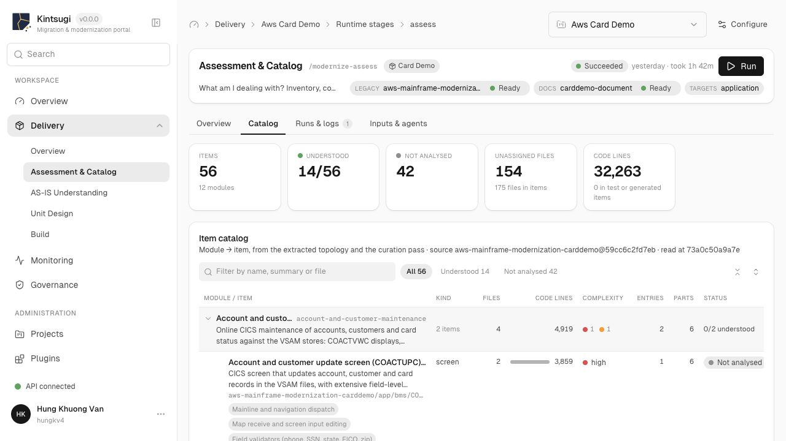

01 · Understand
Turn a legacy codebase into a catalog you can choose from.
Assessment groups source files into catalog items without language-specific parsers. An AI plan proposes what to understand first. You select, and the runs do the rest.
- Catalog derived from the code and curated by an analyst agent
- Items ordered by calls, shared data and cycles. Advice, never a gate
- Several selections in flight at once, and a failed run resumes where it stopped

Actual development portal · Card Demo · View full size ↗